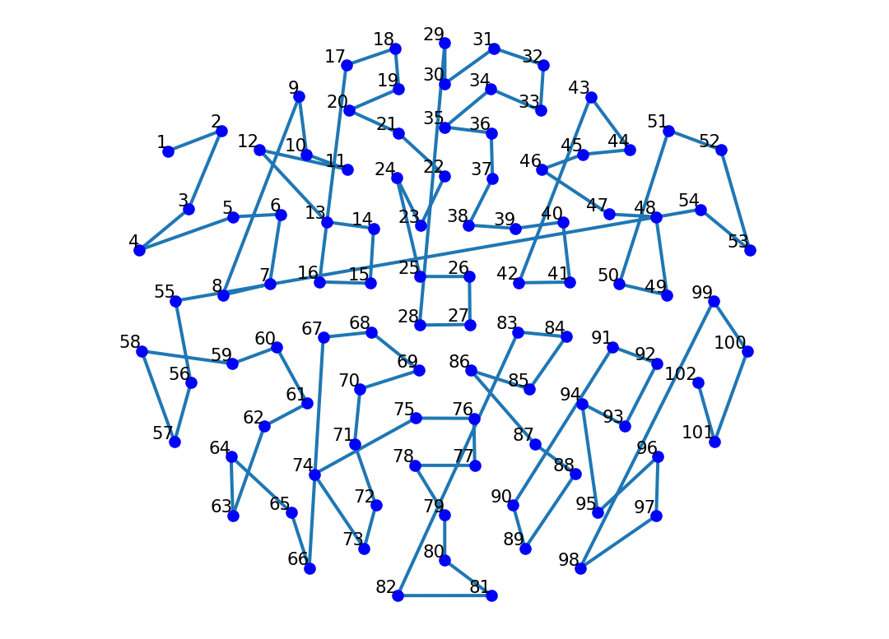

This report details the process and findings of classifying Brain-Computer Interface (BCI) data to distinguish between different movement intentions (e.g., left vs. right arm) using electroencephalography (EEG) signals. The primary machine learning technique explored is Support Vector Machines (SVMs). The report covers the background of BCIs and SVMs, the methodology used for data acquisition, signal processing, classification, and evaluation, the key results obtained, and a discussion of their implications, addressing all required components.
1 Introduction
Brain-computer interfaces (BCIs) have been explored for several decades as a potential pathway for individuals with paralysis or other disabilities to regain interaction with the world (cite: Brain Computer Interfaces, a review). However, significant challenges remain, spanning from effectively collecting brain signal data to accurately processing that data to understand user intent.
Project Goals: This project introduces an approach for tackling one key aspect of this challenge: classifying electrical data recorded from the brain via electroencephalography (EEG) to decode a person’s intended movement. Specifically, we employ a machine learning model known as a Support Vector Machine (SVM) for this classification task.
Approach Overview: The ultimate goal is to determine whether a person intends to move their left or right hand based solely on their brain activity, even without overt physical movement. The system enabling this is the BCI, which in this project comprises two main components: the EEG system for acquiring the raw neural signals, and the SVM algorithm for interpreting these signals and making the classification decision.
Report Scope: By the conclusion of this report, we’ll provide a robust understanding of the SVM’s performance when applied to EEG data for movement intention decoding. This includes evaluating overall classification accuracy and analyzing specific factors within the model and data that influence this performance.
1.1 Motivation
The need for advancements in BCI technology is underscored by the significant population that could benefit. According to the 2013 US Paralysis Prevalence & Health Disparities Survey, nearly 5.4 million people live with paralysis (cite: prevelance and causes of paralysis). At that time, this represented almost 1.7% of all US citizens, and the number has likely grown since. Furthermore, paralysis often correlates with significant challenges in daily life and overall well-being; the survey noted that only 15.5% of these individuals were employed, and over 30% were smokers. Given the severe effects of paralysis, technologies that offer relief and restore function are crucial for improving quality of life. BCIs stand out as one of the most promising avenues to potentially restore movement capabilities and significantly enhance independence and well-being for affected individuals (Brain-Computer interfaces, a reivew).
1.2 Background
1.2.1 What is a BCI?
Our brain is constantly producing signals electrical signals that tell our body what to do. However, this process is complex and reliant on many components in our body, any one of which can break down. In people where this has occurred, a Brain-Computer Interface (BCI) can behave as a supplementary way for the brain’s signals to reach and control the body. At its core, a BCI acts as a communication bridge, translating brain activity into commands for an external device, which bypasses the body’s normal neuromuscular pathways (BCI: a review cite). In order for the BCI to do this, we need to be able to both read and interpret the signals of our brain in meaningful ways. In this project, we focus on non-invasive BCIs that use Electroencephalography (EEG) to measure these signals.
EEG employs sensors placed directly on the scalp to detect the brain’s electrical potentials. Although this is non-invasive and easier than many other methods, the signals acquired present their own challenges. The electrical signals are complex, often mixed with noise (from muscle movements, eye blinks, or external interference), and significantly attenuated by the skull and scalp tissues. Furthermore, using multiple electrodes simultaneously to capture sufficient spatial information results in very high-dimensional datasets[cite: 6], meaning each data point has many components to be considered. Effectively deciphering intended commands (like “move left” vs. “move right”) from this noisy, high-dimensional data requires sophisticated analysis techniques, which is where machine learning becomes essential.
1.2.2 What is a Support Vector Machine (SVM)?
Provide a conceptual explanation of SVMs.
Explain the core idea: finding an optimal separating hyperplane, maximizing the margin, and the role of support vectors.
SVM Suitability: Explain, in your own words, why an SVM classifier is well-suited for this specific binary classification problem[cite: 140]. Include an explanation, in your own words, of why SVMs can be effective with high-dimensional data even when the number of training observations is relatively small (N < D scenario)[cite: 141].
Other Applications: Briefly describe, in your own words, other potential application areas where this SVM approach might be useful beyond BCI[cite: 141].
1.2.3 What is a Support Vector Machine (SVM)?
Support Vector Machines (SVMs) are supervised machine learning models designed primarily for classification tasks, meaning they learn to assign data points to predefined categories. Given a new data point, an SVM determines which category it most likely belongs to based on patterns learned from labeled training data - meaning we feed it some starting data that’s already assigned to categories, and it learns from that. In the context of this project, our categories are simply “intended left movement” and “intended right movement.” The SVM’s job is to analyze the features extracted from an EEG signal segment and classify it as belonging to either the “left” or “right” intention category.
At a high level,
Conceptually, an SVM works by trying to find the “best” boundary that separates the data points of different classes in the feature space. Imagine it like this: you’ve got a few 2-D data points, and you plot them along the xy plane. Each data point is either red or green. Assume for now that all the red points are clustered in the top right, and all the green points in bottom left. An SVM would draw a boundary separating these data points.
import matplotlib.pyplot as pltimport numpy as npfrom sklearn import svm# Generate some sample datanp.random.seed(0)# Red points in Quadrant 1X_red = np.random.randn(10, 2) *0.4+ [2, 2]# Green points in Quadrant 3X_green = np.random.randn(10, 2) *0.4+ [-2, -2]X = np.vstack((X_red, X_green))y = np.array([0]*10+ [1]*10) # 0: red, 1: green# Fit the SVM modelclf = svm.SVC(kernel='linear')clf.fit(X, y)# Create a mesh to plot the decision boundaryxx, yy = np.meshgrid(np.linspace(-4, 4, 500), np.linspace(-4, 4, 500))Z = clf.decision_function(np.c_[xx.ravel(), yy.ravel()])Z = Z.reshape(xx.shape)# Plot 1: just the pointsplt.figure(figsize=(10, 4))plt.subplot(1, 2, 1)plt.scatter(X_red[:, 0], X_red[:, 1], c='red', label='Class 0 (Red)')plt.scatter(X_green[:, 0], X_green[:, 1], c='green', label='Class 1 (Green)')plt.title('Red and Green Points')plt.xlabel('X1')plt.ylabel('X2')plt.legend()plt.grid(True)# Plot 2: with decision boundaryplt.subplot(1, 2, 2)plt.scatter(X_red[:, 0], X_red[:, 1], c='red')plt.scatter(X_green[:, 0], X_green[:, 1], c='green')plt.contour(xx, yy, Z, levels=[0], colors='blue', linewidths=2)plt.title('SVM Decision Boundary')plt.xlabel('X1')plt.ylabel('X2')plt.grid(True)plt.tight_layout()plt.show()
In two dimensions (like above), this is a simple line. In higher dimensions (like our 204-dimensional EEG data), this boundary is a plane or a hyperplane. What makes SVMs distinct is their strategy for finding this boundary: they aim to maximize the margin, which is the distance between the separating hyperplane and the closest data points from each class. These closest points are called “support vectors” because they essentially support or define the position of the margin and the hyperplane. This principle of maximizing the margin often leads to classifiers that generalize well to new, unseen data. While the underlying mathematics involves optimization, the core idea is finding this maximal-margin separator.
SVMs are particularly well-suited for the challenges presented by EEG data in this BCI project. EEG data is inherently high-dimensional, and SVMs are known to be effective in such high-dimensional spaces, potentially mitigating the “curse of dimensionality” better than some other algorithms. They can perform well even when the number of training samples is not vastly larger than the number of features, a common scenario in BCI experiments, because of the emphasis on maximizing the margin. This can also help to reduce the impact of noise on our classifier.
SVMs have applications beyond BCI and neuroscience. They’ve been used to classify text in various ways (such as detecting spam emails) (cite: support vector machine active learning), detect faces (cite: face recognition) and even predict geological events (cite: seismic events). As we can see, this technology is widely applicable, and its continued study has many potential benefits.
2 Methods
Provide an overview of the methodology: data acquisition, signal processing overview, SVM classification details, and the two-level cross-validation evaluation strategy.
2.1 Data Acquisition
Data Source: Describe the source and nature of the EEG data used.
EEG Setup: Detail the specifics: number of electrodes, data channels per electrode, total feature dimensionality (e.g., 204 features)[cite: 31].
Experimental Conditions: Explain, in your own words, the two conditions under which data was collected (Overt vs. Imagined movement) and why both are relevant to BCI research[cite: 142]. Mention expected signal differences (e.g., weaker signals in Imagined)[cite: 10].
Data Structure: State the number of trials per class per condition (e.g., 120 trials for movement 1, 120 for movement 2, total 240 per condition)[cite: 31]. Explicitly state how you are formulating the classification problem (e.g., defining Class 1 vs. Class 2, acknowledging the unknown left/right mapping)[cite: 52, 154].
3 Methods
Our approach involves several key steps: first, getting the specific EEG datasets for overt and imagined movements; second, using the provided feature vectors with minimal extra signal processing; third, applying SVM classifiers to distinguish between movement intention classes; and finally, evaluating the classifier performance and tuning hyperparameters using a two-level cross-validation strategy.
3.1 Data Acquisition
The foundation of this project is the electroencephalography (EEG) data collected from a human subject.
EEG Setup: The specific setup used for this data involved 102 electrodes distributed across the scalp, as seen below (with each blue point being a single electrode). Each electrode measured information related to the local electrical field gradient, providing two distinct data components (one for the x-direction gradient, one for the y-direction gradient). This resulted in a total of 204 data channels or features for each recorded time point or trial.
import matplotlib.pyplot as pltimport pandas as pddf = pd.read_csv("assets/BCIsensor_xy.csv", header=None)x = df.iloc[:, 0]y = df.iloc[:, 1]plt.plot(x, y)plt.scatter(x, y, color="blue", s=20, zorder=3)for i, (xi, yi) inenumerate(zip(x, y)): plt.text(xi, yi, str(i +1), fontsize=8, ha='right', va='bottom')plt.axis("equal")plt.axis("off")plt.show()

Experimental Conditions: Data was collected under two distinct conditions:
Overt Movement: The subject physically moved their left or right arm. Signals recorded during overt movement are expected to be stronger and potentially easier to classify.
Imagined Movement: The subject imagined moving their left or right arm but remained physically still. These signals are typically weaker but are very important for BCIs designed for individuals who cannot perform physical movements.
Data Structure: For each condition (Overt and Imagined), the dataset contains 120 trials corresponding to “movement 1” and 120 trials corresponding to “movement 2”. The specific mapping of “movement 1” and “movement 2” to the actual left or right hand movement is unknown for this dataset. This gives a total of 240 trials per condition, with each individual trial represented as a 204-dimensional feature vector, corresponding to the measurements from the 204 data channels. For classification, we treat this as a binary problem distinguishing between the two movement types.
3.2 Classification with Support Vector Machines (SVMs)
Before we look at the results of our classifier, let’s understand what’s happening under the hood. Remember that the core task of the SVM classifier in this project is to learn a decision boundary that separates the two classes of movement intention (Movement 1 vs. Movement 2) based on the 204-dimensional EEG feature vectors.
3.2.1 Mathematical Formulation
Let our training dataset consist of \(N\) trials, where each trial \(i\) has a feature vector \(x_i \in \mathbb{R}^{204}\) and a corresponding class label \(y_i \in \{-1, +1\}\) (representing, for example, Movement 1 and Movement 2). The goal of the linear SVM is to find the optimal separating hyperplane defined by a weight vector \(w\) and a bias term \(b\). The hyperplane equation is \(w^T x + b = 0\).
But what happens if the data overlaps, or if the true boundary between classes isn’t a straight line? In such cases, no single linear hyperplane can perfectly separate all the data points. To handle potential overlap and non-separability even in the linear case, we use the soft-margin SVM formulation. This approach seeks a hyperplane that balances maximizing the margin between the classes and minimizing the number of classification errors, allowing some data points to be misclassified or fall within the margin boundary. This is achieved by solving the following optimization problem (cite: support vector machines, author is mammon):
\[
\min_{w, b, \xi} \frac{1}{2} w^T w + C \sum_{i=1}^{N} \xi_i
\]
subject to the constraints:
\[
y_i (w^T x_i + b) \ge 1 - \xi_i, \quad \text{for } i = 1, \dots, N
\]\[
\xi_i \ge 0, \quad \text{for } i = 1, \dots, N
\]
Terms:
\(w\): The weight vector, which is perpendicular to the separating hyperplane. Its magnitude \(||w|| = \sqrt{w^T w}\) is inversely related to the margin width. Minimizing \(\frac{1}{2} w^T w\) is equivalent to maximizing the margin (\(2/||w||\)).
\(b\): The bias term, which shifts the hyperplane parallel to itself without changing its orientation.
\(x_i\): The 204-dimensional feature vector for the \(i\)-th training trial.
\(y_i\): The class label (+1 or -1) for the \(i\)-th training trial.
\(\xi_i\): These are non-negative slack variables. \(\xi_i\) represents the degree to which the \(i\)-th data point violates the margin constraint. If \(\xi_i = 0\), the point is correctly classified and on or outside its correct margin boundary. If \(0 < \xi_i \le 1\), the point is correctly classified but falls within the margin. If \(\xi_i > 1\), the point is misclassified.
\(C\): This is the regularization parameter. Note: in our class slides we present a slightly different, but equivalent formulation, of the SVM. In this formulation, \(C = 1 / \alpha\). It controls the trade-off between maximizing the margin (associated with term \(\frac{1}{2} w^T w\)) and minimizing the classification errors (associated with term \(C \sum \xi_i\)).
A large\(C\) imposes a high cost on misclassifications (\(\xi_i > 0\)), pushing the SVM to fit the training data more closely, potentially leading to a smaller margin and risking overfitting.
A small\(C\) imposes a lower cost on misclassifications, allowing for a wider margin even if more training points are misclassified or within the margin, which may improve generalization but risks underfitting. Finding an appropriate value for \(C\) is crucial for the performance of our model and will be done through cross-validation, which is explained further on.
Optimization Problem Type:
This mathematical formulation constitutes what we call a convex optimization problem. A convex optimization problem is a problem in which every local minimum is also a global minimum. Generally, a function is convex if it satisfies the following: \(f(\lambda x_1 + (1 - \lambda)x_2) \leq \lambda f(x_1) + (1 - \lambda)f(x_2), \quad \forall x_1, x_2, \lambda \in [0,1]\). Basically, imagine a bowl curving upwards. To be a convex optimization problem, both the function to be minimized and the constraints we apply to that function must be convex, which, examining our formulation for the SVM, is satisfied. To be more formal, we require (cite mlss2011): 1. The objective function term \(\frac{1}{2} w^T w\) is quadratic in \(w\) and thus convex. 2. The term \(C \sum \xi_i\) is linear in \(\xi\) and thus convex. 3. The sum of these two convex terms results in a convex overall objective function. 4. The constraints \(y_i (w^T x_i + b) \ge 1 - \xi_i\) and \(\xi_i \ge 0\) are all linear inequalities in \(w, b, \xi\). Linear inequalities define convex feasible regions (specifically, half-spaces), and the intersection of convex sets is also convex.
Because both the objective function and the feasible region are convex, the entire problem is convex. The convexity of this problem helps ensure that standard optimization algorithms can find a unique optimal solution for the hyperplane.
3.2.2 Handling Non-Linearity: The Kernel Trick
The linear SVM formulation described above finds a linear boundary. However, in many real-world problems, the relationship between features and classes might be non-linear, meaning a straight line or flat plane isn’t enough to separate the classes effectively. SVMs can handle this using kernels.
The core idea, often called the “kernel trick,” is to implicitly map the original input features \(x_i\) into a much higher-dimensional space using a mapping function \(\phi(x)\) (cite: improving support vector machines). In this higher-dimensional space, the data might become linearly separable, allowing us to find a linear hyperplane there. The “trick” is that we don’t need to explicitly compute the high-dimensional coordinates \(\phi(x_i)\). Instead, kernel functions \(K(x_i, x_j)\) compute the dot product of the mapped vectors directly: \(K(x_i, x_j) = \phi(x_i)^T \phi(x_j)\). Since the SVM algorithm’s solution primarily depends on dot products between feature vectors (especially in its dual formulation), we can substitute \(x_i^T x_j\) with \(K(x_i, x_j)\) everywhere, effectively performing the classification in the high-dimensional space without the computational cost of explicitly transforming the data.
Common Kernels: The baseline for this project is the linear kernel (\(K(x_i, x_j) = x_i^T x_j\)). However, I experimented with two other kernels to see their performance, specifically:
Polynomial Kernel:\(K(x_i, x_j) = (\gamma x_i^T x_j + r)^d\). This kernel can model polynomial boundaries, and introduces hyperparameters: the degree \(d\), a scaling factor \(\gamma\), and a coefficient \(r\) (cite: the kernel polynomial method).
Radial Basis Function (RBF) Kernel (Gaussian Kernel):\(K(x_i, x_j) = \exp(-\gamma ||x_i - x_j||^2)\). This kernel is also capable of modeling complex boundaries. Its behavior is controlled by the hyperparameter \(\gamma\), which defines how far the influence of a single training example reaches. A small \(\gamma\) means a broader influence (smoother boundary), while a large \(\gamma\) means a more localized influence (potentially wigglier boundary, risk of overfitting) (cite: parameter selection in…). Maybe visualization, 2D illustration of an SVM hyperplane, margin, and support vectors